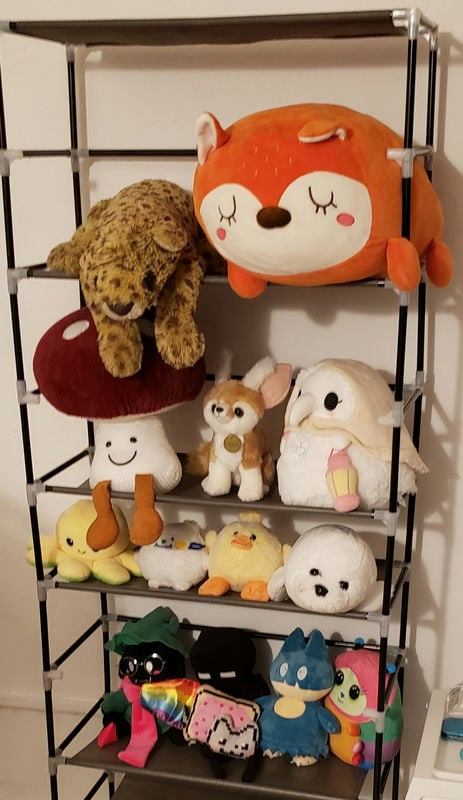
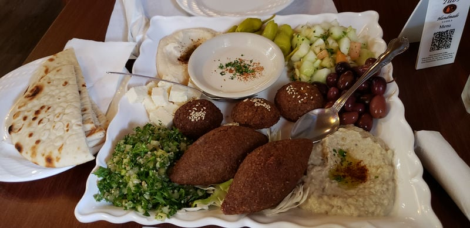

go back
2024 scrapbook
january - february - march - april - may - june - july - august - september - october
legend
□ = ongoing / ✘ = dropped / ✔ = completed / ⟳ = repeat
★☆☆☆☆ = did not like / ★★☆☆☆ = eh? / ★★★☆☆ = its okay / ★★★★☆ = enjoyable / ★★★★★ = perfect
january
i got back from my florida trip /
my grandma passed away + /
i am officially back at uni!
media
- fashion dreamer / ✔ / ★★★★★
- my cat is such a weirdo (vol. 1) / ✔ / ★★★★★ /
+
super cute manga about cats being silly!
- the lord of the rings: the fellowship of the ring / ★★★★★
- the tale of the princess kaguya / ⟳ / ★★★★★
+
i rewatched this JUST because i wanted to feel something. please watch this movie. please please pleas-
- the lord of the rings: the two towers / ★★★★☆
february
first time living alone! / i rewatched kaiba like 2 times. almost 3 times
media
- just dance 2 / ★★★★☆
+
played it at a party :3
- marcel the shell with shoes on / ★★★★★
+
FUCK...... as someone who recently lost their grandma, this one hit me hard as hell. i've been meaning to watch this ever since it released on theaters, but i don't think it ever screened where i live. anyways. literally yesterday it got put on netflix and it HURRIED to put it on and FINALLY watch it. my god. this is the loveliest thing i've ever watched. marcel's relationship with his nana reminded me so so so much of mine with my grandma. one of the main themes of this movie is change. what nana told marcel about "don't stop living because of me" is almost identical to what my grandma had told me once. i really related to this tiny shell and his dynamic with his shell nana. i don't think i could have watched this at a better time. change can be scary but it is inevitable, so we must continue to move forward.
- lord of the rings: return of the king / ★★★★★
+
i cried
- fortnite / ⟳
+
IM NOT BACK ON MY BULLSHIT.... but i did play a little bit with my bf and we managed to win a duo game. YAY
march
i got the highest exam score of all precalculus sections my professor gives ?!?!?  / went out to eat ice cream with a classmate! / went to an orchestra for the first time! / bought a custom domain for my site :)
/ went out to eat ice cream with a classmate! / went to an orchestra for the first time! / bought a custom domain for my site :)
media
kung fu panda 4 (2024) / ★★☆☆☆
+
i have never felt this type of disappointment before..... so predictable... wow. i would not be surprised if this movie was written by AI
X (2022) / ★★★☆☆
+
old people can get freaky too i guess...
paranormasight: the seven mysteries of honjo / □
pearl (2023) / ★★★★★
+
OH i get it now. yeah this is cinema. btw the coloring in this movie is lovely
dungeon meshi / □
+
i don't have wifi at my place atm so i have downloaded all dungeon meshi eps on netflix and i've been watching it on my free time (mostly while i eat, it genuinely fits so well) and i've been having so much fun with it! i plan to read it once i'm done with the anime. marcille girlfailure we love you.
immaculate / ★★★★☆
bodies bodies bodies / ★★★★☆
dead end: paranormal park (season 1) / □
+
i've been watching this when i go to bed and tbh it's very cute!! it's silly and i like it.
project sekai / i mean its project sekai... 3 stars
april
celebrated my site's 1 year anniversary! + / reconnecting with old friends / perfect score on my 2nd precalculus exam
media
love lies bleeding / ★★★★★
twin peaks (season 1) / ✔ / ★★★★☆
+
there's like 1 character that isn't a freak here and its Pete Martell
fallout / ✔ / ★★★★★
+
HOLD ONNNNNNNNNNNN why was this so good?!?!?!?
I REALLY enjoyed this though. i am not a pro when it comes to fallout lore but i absolutely love how they depicted the different mega companies and their insane ideologies and goals.
honestly when this first got announced i was super scared because i thought it was going to be a slop of different references from the games here and there and call it a day. there's this fallout meme that i constantly think about constantly that's like "don't mess with us fallout fans! we blindly idolize the concepts our games criticize" yeah that was my worse case scenario for this series. but to my surprise they handled the themes of the games really well.
i might be hyping it up LOL but for me the plot was really good and captivating. insane. and the show was also very funny without having to rely heavily on cheap references. honestly surprised at the amount of quality this has. also dogmeat :3
fallout / □
+
oh we are sooooo back
twin peaks (season 2) / □
may
i got sick with a cold  / ended my first uni semester! / got a neat portable CD player / went camping / saw mizu for the first time in 3 years!
/ ended my first uni semester! / got a neat portable CD player / went camping / saw mizu for the first time in 3 years!
media
- priscilla / ★★★★☆
- cozy grove / □
- dawn of the planet of the apes / ★★★★★
- war of the planet of the apes / ★★★★☆
- moral orel / ✔ / ★★★★★
- kingdom of the planet of the apes / ★★★★☆
- fallout / ✔ / ★★★★★
- fallout: new vegas / □
- furiosa / ★★★★★
june
hacked my 3DS / ate at a delicious asian buffet for my bday :3 / visited a ghost town / went to an obstacle course at a lake / visited some old AZ friends / hacked my wii u too / me answering spam callers and them hanging up as soon as i ask them about their made up company
media
- style savvy: trendsetters / □
+
i used to play the demo of this game like CRAZYY when i was a kid. i'm so happy i can finally play it now!
- dungeon meshi / ✔ / ★★★★☆
- moonlit winter / ★★★★★
- they / ★★★☆☆
- i saw the tv glow / ★★★★★
+
ripped me to pieces bro.......
- yoshi's woolly world / □
- smiling friends - Season 2 / ✔ / ★★★★★
july
went to an interview... / been walking more frequently, made it to 8.9 miles in one day! / i'm finally employed!!!!

media
- maxxxine / ★★★☆☆
- twin peaks - Season 2 / ✔ / ★★★★☆
- longlegs / ★★★★☆
- twin peaks: fire walk with me / ★★★★☆
- cooking mama / ⟳ / ★★★★★
+
i miss not having bills and playing this on my DS lite
- fallout new vegas / □ / ★★★★★
+
i get why people hate fallout 4 now....
- poor things / ★★★★☆
+
this was honestly a very cool watch and i did enjoy it of course but everytime i'm reminded that she has the brain of a baby with everything that has happened it makes me go eeeeeuuuuuuughhhhhhhhhh in a bad way........
- elemental / ★★★☆☆
+
almost dropped this half way through but i decided to pick it up again and honestly it wasn't that bad but the introduction / start of the movie was def a bit rough. at least for me. LIKE... listen. i think that wade and ember's relationship is very cute but i only thought this on the very last quarter of the movie. i really thought they had absolutely no chemistry at the start + the idea that the guy who was about to shut down your home / parent's business at the very start is ALSO the one you're gonna fall in love with just did not roll well for me. am i crazy for this???? so like i really have no clue how that friendship even started or howwwww ember was not mad at this guy. i don't think i could ever fall in love with a goverment employee who was out and about to make my life miserable. i am just saying.
august

uni semester round 2! / finished my yukika passport template! / got my first streetpass tag since i revived my 3DS on june / learning about python through my compsci class
media
- trap / ★★★★★
+
i was laughing my ass off.
- coraline / ⟳ / ★★★★★
+
watched in theaters!!!
- yoshi's woolly world / □ / ★★★★★ /
+
been playing it with my girlfriend. poochy my new favorite video game dog.

- style savvy styling star / □
- grace and frankie / □ / ★★★★☆
september
went to another orchestra! / bought some plants for my place.
media
- joe pera talks with you / ⟳ / ✔ / ★★★★★ /
+
been rewatching joe pera talks with you since i wanted to watch it with my girlfriend because she has never watched it! my god do i love this show so much... cried at the ending of the last season... there is just something so special to me about that scene where joe put his chair on the little plot that he bought from nana's house. showcasing his growth and his acceptance of nana's death. but i think there also something very charming about the shot where he sits and there's a ray of sunshine right in his eyes so he takes his glasses off and starts rubbing his eyes. and boom. just like that the show ends. i don't know but i was crying BAD... this show feels incredibily human to me. which such a nonsense thing to say. but i really don't know how else to describe it. i'll ramble more about this show when i get to put it on my watching log. i love you white boy.
- grace and frankie / ✔ / ★★★★★
- cato / □ / ★★★★★
+
been having so much fun with this game! gaming log
- the queen's gambit / ✔ / ★★★★☆
+
i started this show years ago and i remember liking it but then i just simply forgot i was watching it. recommended by both my mom and my grandma. i did like it!
- arcane / ✔ / ★★★★★
+
this was insanely good WHAT THE FUCK??? very excited for season 2 to drop this november!
- transformers one / ✔ / ★★★★★
+
and WHY did i cry when i watched this LKSDFJLDFJ. this was insanely good tho??? i might not know anything about transformers but i will forever love bumblebee. thats oomf FR
- the rehersal / ✔ / ★★★★★
+
this was just an insane watching experience. i can't believe i cried so much during the last 2 episodes.
- one piece (live action show) / ✔ / ★★★★★
+
did not think i would have such a fun time watching this tbh..... honestly really liked it! my girlfriend might be able to convince me to read one piece... we will see!
- villain / ✔ / ★★★★★ /
+
i stood up and started clapping.
october
bought tickets to see billlie next month! / watched the best movie of my life + / went to a halloween orquestra!
media
- the final destination / ⟳ / ★☆☆☆☆ /
+
put this on thinking it was the first one so my girlfriend would watch it for the first time. 5 secs in i realized this is actually the 4th one which is stupidly named "the final destination"... it ain't even the final one... we searched for the first movie and it was not available in the streaming platform we were on. i honestly kept the movie in the background as my gf built her warhammer figurines. man. what a slop of a movie.
- the wild robot / ★★★★☆
- uzumaki / ✔ / ★★☆☆☆
- orange is the new black / □ / ★★★★☆
- dandadan / □
- a nightmare on elm street (1984) / ⟳ / ★★★★☆ /
+
got the chance to watch this in theaters... honestly pretty cool!
- woman of the hour / ★★★★☆
+
this made my stomach turn.... great directorial debut for anna kendrick tho love her.
- look back / ★★★★★ /
+
my life was changed for REAL
- zombieland / ★★★☆☆
- too cute /
+
i've been watching this shit on tubi every night ever since i got sick with a cold.

.jpg "cat shrine i saw at campus")

.jpg "camping in AZ")
.jpg "camping in AZ")


.jpg "jerome my sweet boy")

.jpg "my little garden")